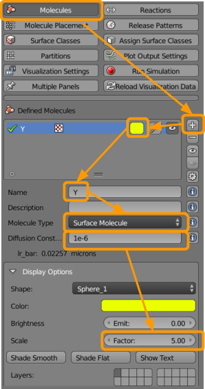
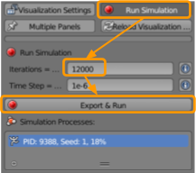

Software Tutorial: Comparing Simple Regulation to Negative Autoregulation
Implementing simple regulation in CellBlender
In this tutorial, we will compare simple against negative autoregulation using a particle-based simulation in CellBlender. We will start with simple regulation; first, load your CellBlender_Tutorial_Template.blend file from the Random Walk Tutorial. Save this file as NAR_comparison.blend. You may also download the completed tutorial files here.
Then go to CellBlender > Molecules and create the following molecules:

- Click on the
+button. - Select a color (such as yellow).
- Name the molecule
Y1. - Select the molecule type as
Surface Molecule. - Add a diffusion constant of
1e-6. - Up the scale factor to
5(click and type “5” or use the arrows).
Repeat the above steps as needed to make sure that both of the following molecules are entered with the following parameters.
| Molecule Name | Molecule Type | Diffusion Constant | Scale Factor |
|---|---|---|---|
| Y1 | Surface | 1e-6 | 5 |
| X1 | Surface | 1e-6 | 1 |
Now go to CellBlender > Molecule Placement to set the following sites to release our molecules:

- Click on the
+button. - Select or type in the molecule
X1. - Type in the name of the Object/Region
Plane. - Set the Quantity to Release as
300.
Finally, we set reactions. Go to CellBlender > Reactions and define the following reactions:

- Click on the
+button. - Under reactants, type
X1’(note the apostrophe). - Under products, type
X1’ + Y1’. - Set the forward rate as
2e2.
Repeat the above steps as needed to ensure the following reactions are present.
| Reactants | Products | Forward Rate |
|---|---|---|
| X1’ | X1’ + Y1’ | 4e2 |
| Y1’ | NULL | 4e2 |
Go to CellBlender > Plot Output Settings to ensure that we will be able to plot the concentrations of our particles over time.

- Click on the
+button. - Set the molecule name as
Y1. - Ensure
Worldis selected. - Ensure
Java Plotteris selected. - Ensure
One Page, Multiple Plotsis selected. - Ensure
Molecule Colorsis selected.
We are ready to run our simulation! Visit CellBlender > Run Simulation and select the following options:

- Set the number of iterations to
20000. - Ensure the time step is set as
1e-6. - Click
Export & Run.
Once the simulation has run, click CellBlender > Reload Visualization Data to visualize the outcome.

You have the option of watching the animation within the Blender window by clicking the play button at the bottom of the screen.
Now return to CellBlender > Plot Output Settings and scroll to the bottom to click Plot.

You should be able to see Y reach a steady-state, at which the number of particles essentially levels off subject to some noise.
Save your .blend file.
Adding negative auto-regulation to the simulation
Now that we have simulated simple regulation, we will implement negative autoregulation in CellBlender to compare how this system reaches steady state compared to the simple regulation system.
Go to CellBlender > Molecules and create the following molecules:
- Click on the
+button. - Select a color (such as yellow).
- Name the molecule
Y2. - Select the molecule type as
Surface Molecule. - Add a diffusion constant of
1e-6. - Up the scale factor to
5(click and type “5” or use the arrows).
Repeat the above steps to make sure that we have all of the following molecules (X1 and Y1 are inherited from the simple regulation simulation).
| Molecule Name | Molecule Type | Diffusion Constant | Scale Factor |
|---|---|---|---|
| Y1 | Surface | 1e-6 | 5 |
| X1 | Surface | 1e-6 | 1 |
| Y2 | Surface | 1e-6 | 5 |
| X2 | Surface | 1e-6 | 1 |
Now go to CellBlender > Molecule Placement to set the following molecule release sites:
- Click on the
+button. - Select or type in the molecule
X2. - Type in the name of the Object/Region
Plane. - Set the Quantity to Release as
300.
You should now have the following release sites.
| Molecule Name | Object/Region | Quantity to Release |
|---|---|---|
| X1 | Plane | 300 |
| X2 | Plane | 300 |
Next go to CellBlender > Reactions to create the following reactions:
- Click on the
+button. - Under reactants, type
X2’(the apostrophe is important). - Under products, type
X2’ + Y2’. - Set the forward rate as
2e2.
Repeat the above steps as needed to ensure that you have the following reactions.
| Reactants | Products | Forward Rate |
|---|---|---|
| X1’ | X1’ + Y1’ | 4e2 |
| X2’ | X2’ + Y2’ | 4e2 |
| Y1’ | NULL | 4e2 |
| Y2’ | NULL | 4e2 |
| Y2’ + Y2’ | Y2’ | 4e2 |
Go to CellBlender > Plot Output Settings to set up a plot as follows:
- Click on the
+button. - Set the molecule name as
Y2. - Ensure
Worldis selected. - Ensure
Java Plotteris selected. - Ensure
One Page, Multiple Plotsis selected. - Ensure
Molecule Colorsis selected.
You should now have both Y1 and Y2 plotted.
| Molecule Name | Selected Region |
|---|---|
| Y1 | World |
| Y2 | World |
We are now ready to run the simulation comparing simple regulation and negative autoregulation. To do so, go to CellBlender > Run Simulation and do the following:
- Set the number of iterations to
20000. - Ensure the time step is set as
1e-6. - Click
Export & Run.
Click on CellBlender > Reload Visualization Data to visualize the result of the simulation.
You have the option of watching the animation within the Blender window by clicking the play button at the bottom of the screen.
Now return to CellBlender > Plot Output Settings and scroll to the bottom to click Plot.
A plot should appear in which the plot of Y over time assuming simple regulation is shown in red, and the plot of Y if negatively autoregulated is shown in yellow.
Save your file.
Comparing simple regulation and negative autoregulation
STOP: Now that you have run the simulation comparing simple regulation and negative autoregulation, are the plots of Y for the two simulations what you would expect? Why or why not?
If you find the outcome of the simulation in this tutorial confusion, don’t be concerned. In the main text, we will interpret this outcome and see if it allows us to start making conclusions about why negative autoregulation has evolved, or if we will need to further tweak our model.